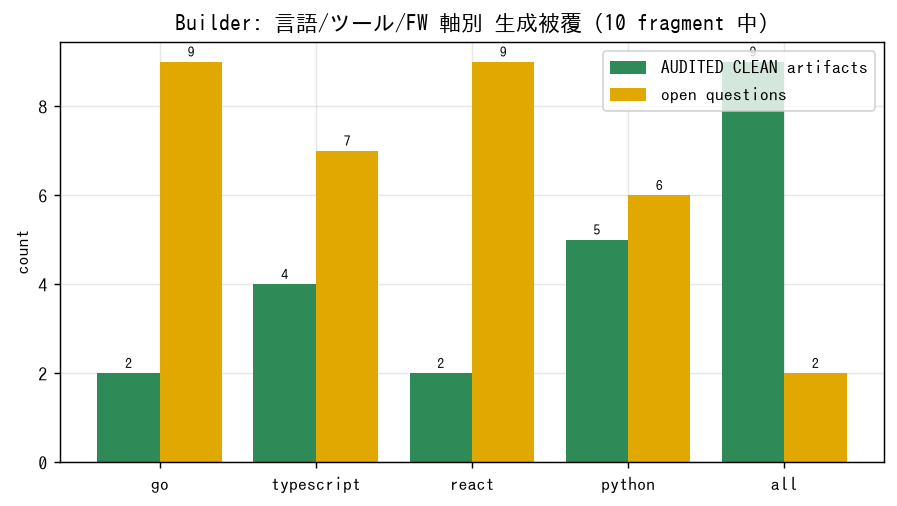
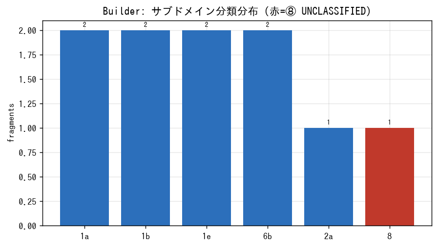
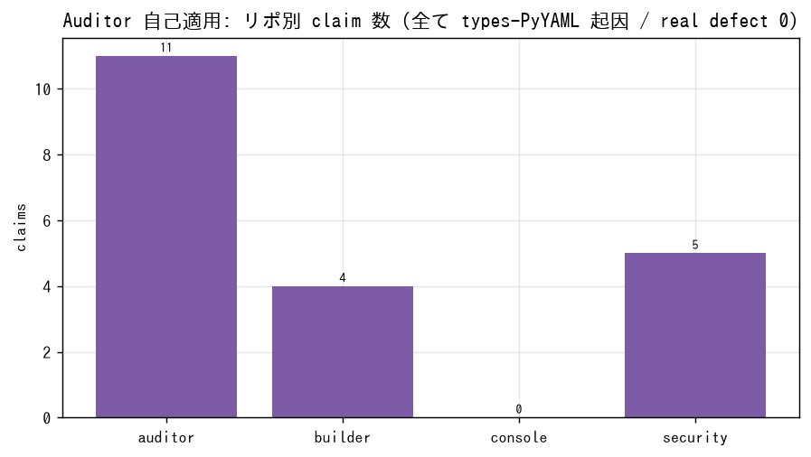
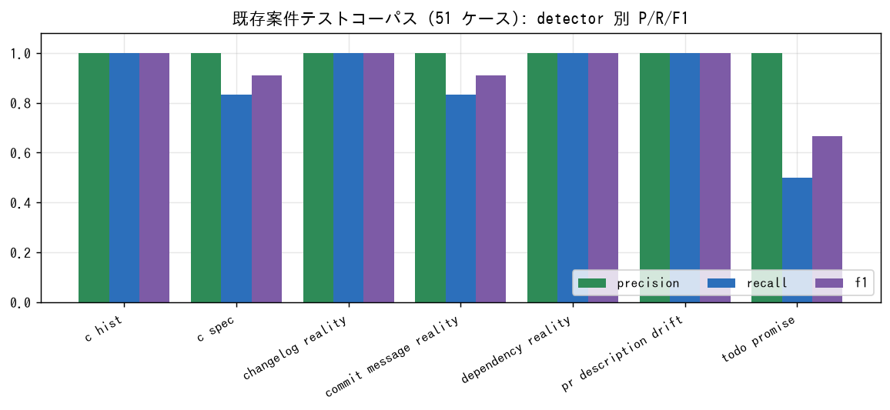
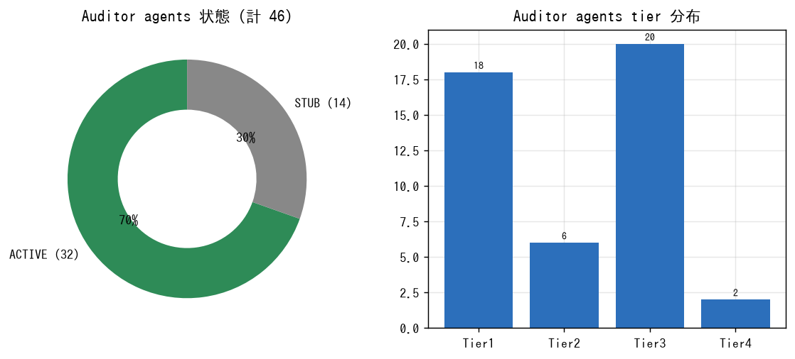
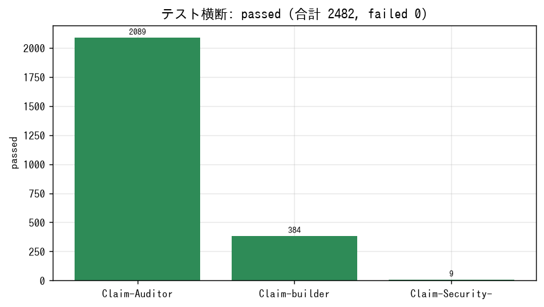
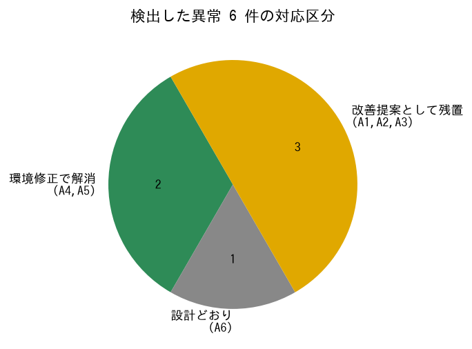

2482
テスト passed (failed 0)
90%
Builder 分類率 (9/10)
0
Auditor 自己適用 real defect
0
LLM 虚偽申告
0.941
案件テストコーパス F1 (51 件)
6
検出した異常
46 / 8
Auditor agents / Builder specialists
34 / 0
Auditor invocations / CC subagents
Builder: 言語/ツール/FW 軸別 生成被覆

Builder: サブドメイン分類分布

Auditor 自己適用: リポ別 claim 数

既存案件テストコーパス: P/R/F1

Auditor インベントリ

テスト横断 passed

検出した異常の対応区分

異常サマリ
| ID | 内容 | 区分 |
|---|---|---|
| A1 | 分類器が provable 表現取りこぼし | 改善 |
| A2 | 複数行文の fragmentation 分断 | 改善 |
| A3 | c_drift 実ドリフトが claim 数に不可視 | 改善 |
| A4 | types-PyYAML 未導入 (mypy 20) | 解消 |
| A5 | subprocess テスト editable 前提 | 解消 |
| A6 | delivered=0 (署名捏造しない設計) | 仕様 |